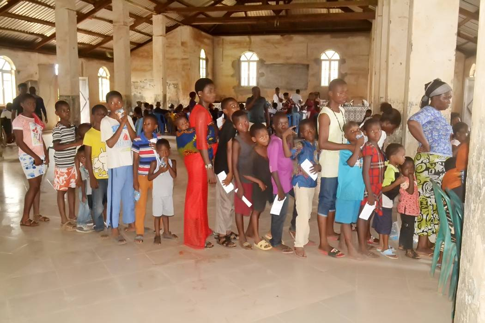
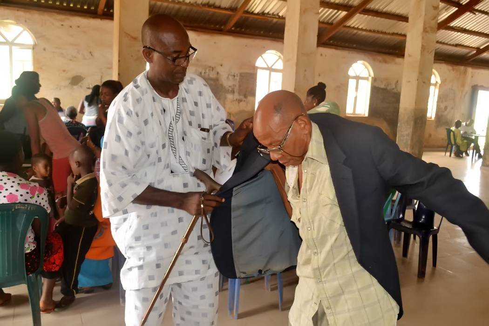
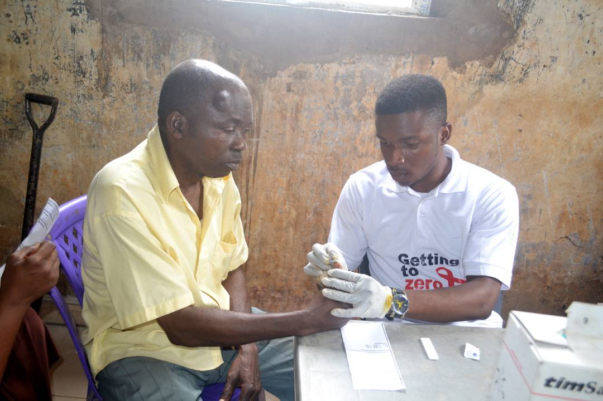
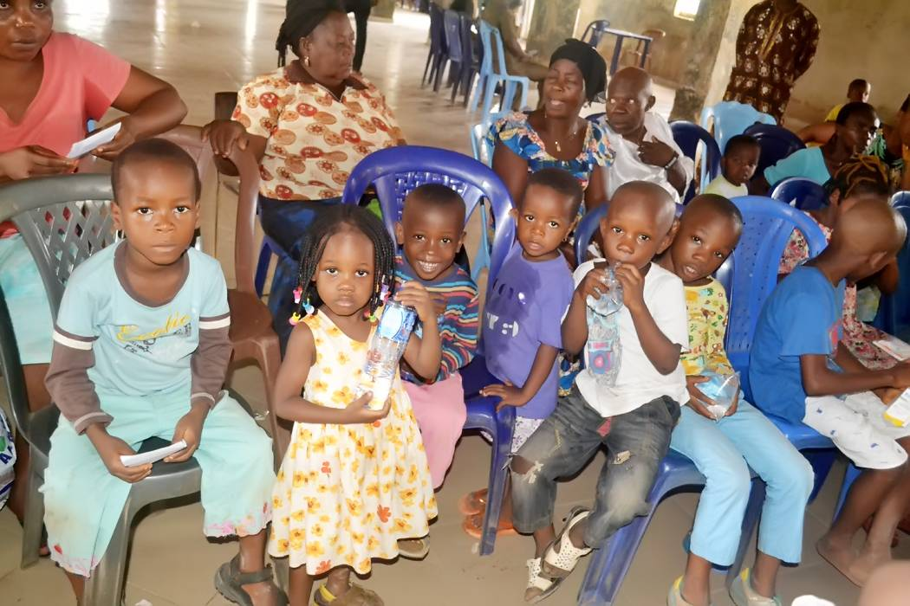
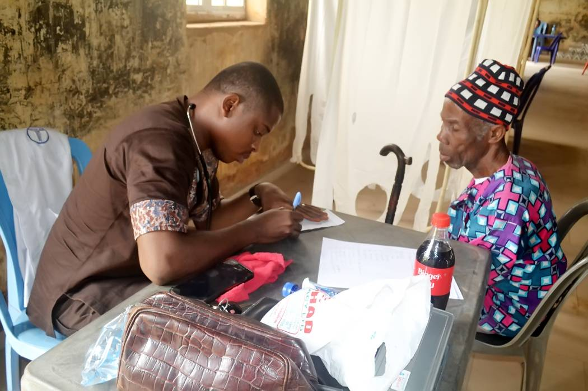

Who We Are
In February 2012, a group of Nigerians in Austin met to discuss how to provide assistance to the under privileged in their hometowns and local communities.
The result of that discussion resulted in forming Compassionate Angels Missionary, (CAM), Inc. CAM is a 501© (3) charitable organization formed exclusively
to attend to the needy people of Nnarambia in Ahiazu Mbaise, in Imo State Nigeria who are suffering in record number for lack of government assistance in
medical and welfare services. Some part of CAM activities will also be to assist less privileged students in Pflugerville, Texas with school
supplies which are ordinarily affordable to them. CAM is therefore focused on both within the Catholic Diocese of Austin, Texas and the Diocese of Ahiara Nigeria.
Our goal is to improve the quality of life and provide opportunities for those in need. The Board of Directors of CAM, which includes the President, Secretary, Financial Secretary
and a Treasurer are all volunteers and all their services are free and voluntary. The board meet once every quarter to discuss the affairs of the organization.
In addition, the Board of Directors engages with the public about the overall purpose of the organization to help the poor and needy.
With the voluntary donation from people of goodwill, who were touched by the deplorable healthcare condition of poor,
CAM went on a medical mission in 2018 to assist the people of Nnarambia in Ahiazu, Mbaise in Imo State Nigeria who were in desperate need of medial attention.
The medical mission was a huge success served 800 people over three days for 9 hours a day.
During the mission in 2018, the medical team observed that majority of the people served complained about lack of access to rudimentary medical check up
such as blood pressure and glucose, (sugar level).
Our Mission
Working in partnership with people of faith all over the world.
Building a Solid Future
We aim to create a foundation for future generations by providing children with educational materials and curriculum. We hope to aid in the building of sustainanble businesses and contribute to the growth of the community.
Enriching the Lives of Others
Our goal is to support, empower and promote the quality of life for the most marginalized in Nnarambia. We are working to provide healthcare education to help minimize communicable diseases. We hope to eventually build a healthy community with its own network of resources.
What We Do
The different ways we strive to aid others.
Medical Support
We are working to support those in need with medical resources while also helping them build knowledge and gain independent access to existing healthcare options.
Child Care & Education
Children are the future. We are working to provide educational support and resources. We are also working to provide extracuricular activites.
Financial Assistance
We are working to set up systems to render assistance to those in need as well as provide them the tools to get them back on their feet.